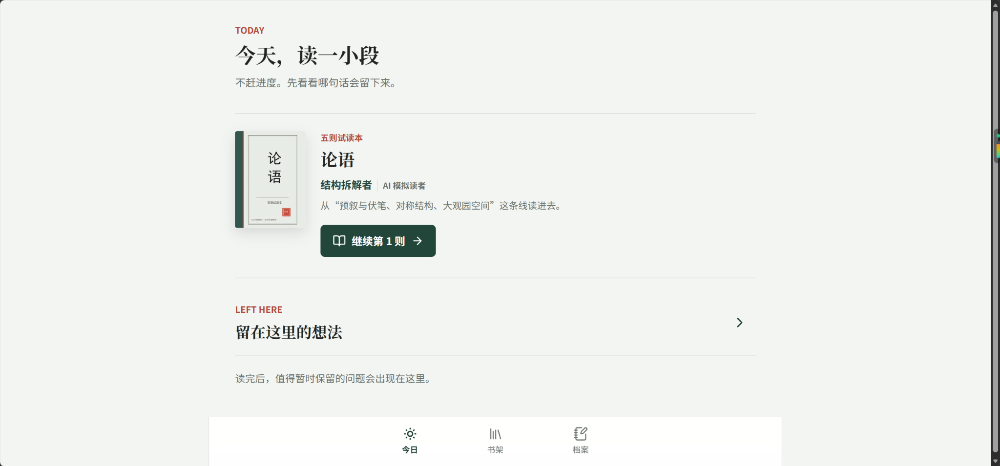
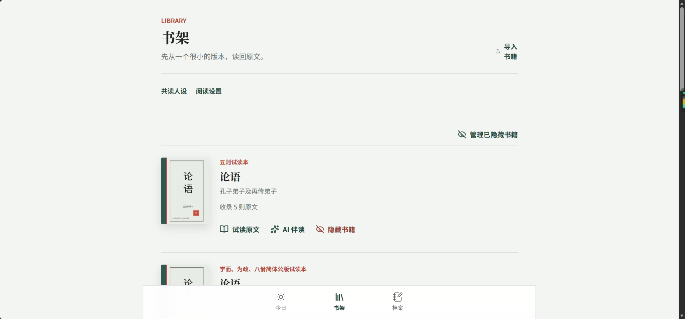
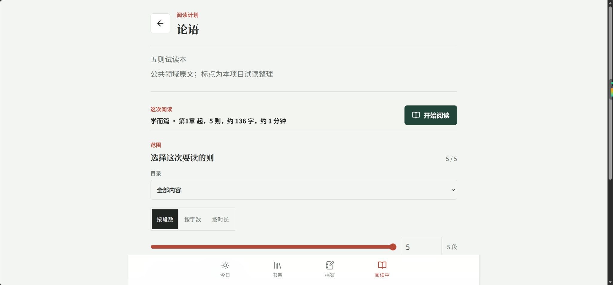

← 返回精选项目
CASE 001 / PROJECT ARCHIVE
伪人读书
让 AI 模拟读者按阅读顺序留下有来源、有性格、低干扰的批注。
真实产品界面关键产品决策我的工作与成果

01 / CASE FILE
项目概览
让 AI 成为与原文共同存在的读者，而不是把读者带离原文的聊天窗口。
面向高理解成本的经典阅读场景，以「模拟读者」的不同观点和批注降低独自阅读的孤独感。我将产品重点放在有依据的观点交流与低干扰的连续阅读。

02 / CASE FILE
关键产品决策
01 / 为什么不做摘要或随时问答？
我选择把 AI 设计为依阅读进度出现的模拟读者。它的观点锚定段落，用户按需展开，避免 AI 的回答取代阅读本身。
02 / 防止剧透与观点漂移
限制模型可见的原文范围，绑定引用位置并保留已发布批注的版本；通过质量基线检查原文引用、人格差异、未来知识泄漏与记忆误归因。
03 / 让陪伴可控
允许不同读者共读，同时为自动生成建立预算、版本和证据边界，明确 AI 模拟身份，不模拟真人在线。
03 / CASE FILE
让交互回应阅读
从阅读计划开始，控制本次阅读的范围与节奏；阅读时原文保持视觉主体，AI 批注仅在合适时机出现。

04 / CASE FILE
验证与边界
已验证： 使用真实模型执行过连续阅读节自动派发、发布与失败重试的端到端验收，并建立四项内容质量检查基线。
完成书架、阅读室、批注展开与进度恢复等核心体验，并使用真实模型测试连续阅读节的内容发布、失败重试与恢复。
我负责产品定位、交互规则、内容质量要求及功能验收，并使用 AI 辅助开发原型与功能。